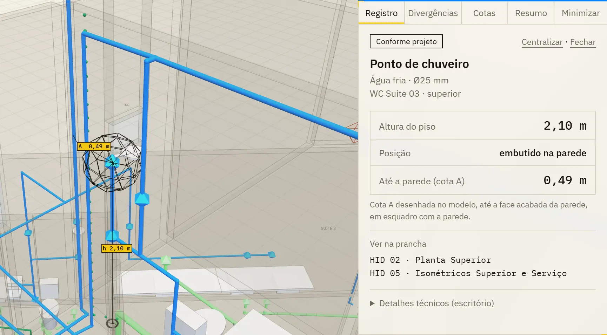
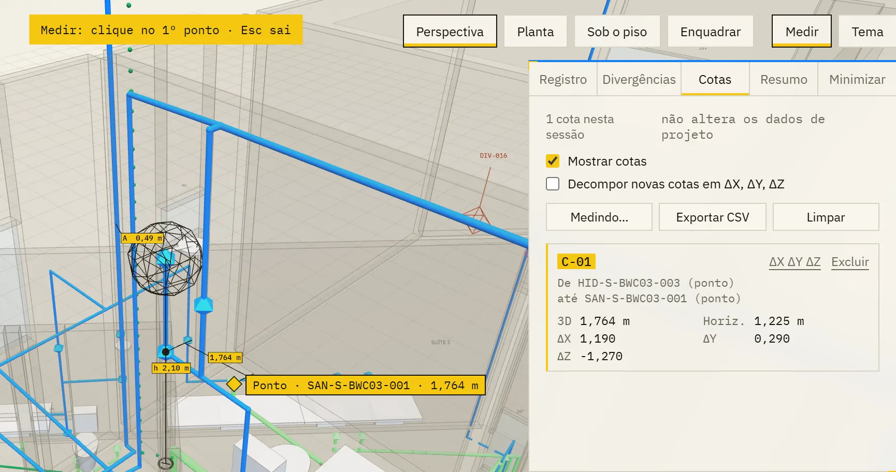
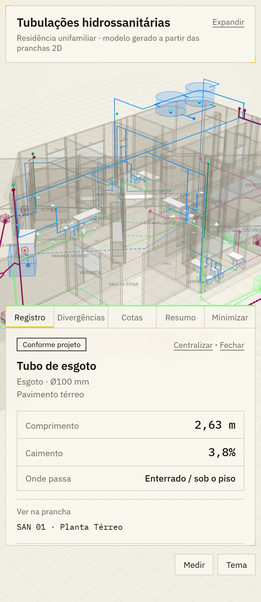

Passo 01 de 02 · Modelo 3D de instalações hidrossanitárias
Das pranchas 2D ao 3D da tubulação com medida num clique
Ele lê as pranchas de instalações e de arquitetura em PDF e devolve um único HTML com a rede em 3D, as divergências entre disciplinas e os CSVs de pontos, trechos e níveis.
# PAPEL Você é engenheiro de instalações prediais hidrossanitárias, com domínio de leitura de projeto e de modelagem 3D para web. Sua tarefa: transformar as pranchas 2D em um modelo 3D interativo de tubulação, para empreiteiros e executores de obra usarem no campo (celular, tablet e notebook) e para o escritório conferir. # PRINCÍPIOS (valem para tudo) - A prancha é a fonte. Nada é inventado: o que não se lê na prancha entra como INFERIDO (com a regra escrita) ou como PENDENTE (com o motivo escrito). - Status de cada ponto e trecho: - EXTRAÍDO: posição e altura lidas em prancha (cota, isométrico ou medida em escala sobre prancha registrada). - INFERIDO: derivado por regra declarada, por exemplo "Z do ramal = +3,20, entre o forro (+2,90) e o fundo da laje (+3,48); cota não indicada". - PENDENTE: não determinável; o motivo vem escrito. - Não atribua a uma norma valor que não está nela. Altura usual de mercado é declarada como tal. - Toda quantidade e coordenada tem memória de cálculo (como X, Y e Z foram obtidos e em qual prancha). - Não identifique cidade nem país do projeto em nenhum entregável. A natureza do projeto pode aparecer. - Antes de cada entrega: rode as verificações automáticas descritas abaixo, faça screenshots com navegador headless e olhe as imagens. Não entregue sem ter visto o resultado. # ENTRADAS (pasta conectada) - Arquitetura/: plantas, cortes, quadro de esquadrias (PDF vetorial). É a única fonte de dimensões, níveis, paredes, portas e janelas. - IHSD/: HID (água fria: plantas, cobertura/caixas, isométricos), SAN (esgoto e ventilação: plantas, detalhes, colunas), DRE (pluvial e drenos de ar-condicionado). - Ignorar Estrutural/ e Elétrico/, salvo para consultar níveis de laje. # ETAPA 1 — INVENTÁRIO (parar e perguntar se faltar algo essencial) 1. Liste cada prancha: código, disciplina, pavimento, escala, revisão e data. 2. Leia legendas, notas e simbologia de cada disciplina. Símbolo sem legenda vira PENDENTE. 3. Verifique se as pranchas são vetoriais (pymupdf get_drawings) e se há texto extraível. Prefira sempre o vetor à imagem. 4. Se faltar algo essencial (corte com pé-direito, planta de um pavimento), pare e me diga o que falta. # ETAPA 2 — SISTEMA DE COORDENADAS E NÍVEIS - Origem (0,0,0): um vértice inequívoco da ARQ (por exemplo, o ápice externo do térreo). Declare qual foi escolhido. Unidade: metro, 3 casas. X para a direita da folha, Y para o topo da folha, Z = cota de projeto (RN declarada). - Confirme a escala da ARQ comparando os textos de cota com o comprimento vetorial das linhas de cota (relate quantas cotas conferem a ±1%). - Registre cada planta de instalações sobre a ARQ por correlação de imagem (paredes da ARQ rasterizadas × prancha rasterizada; translação, escala nominal, rotação 0). Confira com uma sobreposição visual por prancha e registre qualquer divergência de escala, rotação ou deslocamento. - Tabela de níveis por pavimento, a partir de plantas e cortes: piso acabado de cada ambiente (atenção a pisos rebaixados, boxes, áreas externas e garagem), forro, fundo e topo de laje, laje das caixas d'água, base das caixas. Cada nível com a fonte. - Defina polígonos de piso/laje por pavimento e por nível (incluindo áreas rebaixadas e varandas sobre outros ambientes). Eles servem para: arquitetura, "cota vertical ao piso" e "trecho enterrado". # ETAPA 3 — ARQUITETURA (contexto, não protagonista) - Paredes: extraia do vetor da ARQ as linhas de parede pela espessura/cor de traço; agrupe pares paralelos em eixo + espessura (0,13 / 0,15 etc.); una segmentos colineares. A casa NÃO é toda ortogonal: trate paredes inclinadas como segmentos genéricos, nunca alinhadas a X/Y. - Altura da parede: do piso do lado mais baixo até o fundo da laje do pavimento. Fora da edificação = muro (altura adotada declarada). - Portas e janelas: detecte vãos (intervalo entre segmentos colineares e vão entre extremidade livre e face de parede transversal). Associe cada vão à etiqueta mais próxima (P01, J03…) e aplique largura, altura e peitoril do QUADRO DE ESQUADRIAS. Gere verga e peitoril como volumes; janela com vidro translúcido; rótulo da esquadria acima do vão. Vão sem etiqueta: verga a 2,10 (INFERIDO). Etiqueta sem vão compatível: divergência. - Lajes e pisos com os polígonos da Etapa 2. Nomes dos ambientes como rótulos discretos. - Nada de mobiliário nem acabamento, exceto louças (Etapa 6). # ETAPA 4 — PONTOS E TRECHOS (rede contínua) Extração: - Traços de tubulação por cor e espessura no vetor de cada planta. Quando o traço for um contorno duplo, calcule a linha de eixo pelo par de linhas paralelas. Quando for mancha/raster, esqueletize a máscara de cor e simplifique (approxPolyDP). Converta para coordenadas do modelo pela transformação da Etapa 2. - Textos de DN, rótulos de colunas (AF01, TQ02, TV03, AP04…), setas de declividade e "vem de / vai para". - Isométricos: alturas (h=) de cada ponto e altura dos ramais internos dos banheiros. Siga o traçado do isométrico: descida da coluna, registro a 1,90, ramal a 1,15–1,25, ramal baixo a ~0,60, derivações verticais para cada ponto. Altura de ramal não cotada no iso = medida em escala no iso (declarar). Registro de cada ponto: - ID hierárquico [SISTEMA]-[PAV]-[AMBIENTE]-[SEQ] (ex.: HID-T-BWC01-003). Os IDs nunca mudam depois de criados. - Tipo, sistema (HID-AF, SAN-ESG, SAN-VENT, DRE), DN, X, Y, Z, h sobre o piso, pavimento, ambiente, prancha de origem, memória de cálculo e status. Rede (o mais importante): - Modele por NÓS compartilhados: cada vértice é um nó nomeado e os trechos referenciam nós. Assim a continuidade é garantida por construção. - Água fria, sequência completa: rua → hidrômetro → tê → (a) subida direta para a caixa d'água e (b) ramal enterrado até o reservatório inferior com boia; reservatório inferior → válvula de pé → sucção → motobomba → recalque → caixa; barrilete → limpeza e extravasor → descidas das colunas → ramais de cada pavimento → pontos. Não deixe de fora a entrada da rua, o abastecimento do reservatório inferior nem o recalque. - Desvios de coluna entre pavimentos: quando o XY de uma coluna muda entre plantas, procure o desvio no isométrico. Se não houver, modele como INFERIDO e registre divergência. - Esgoto e pluvial por gravidade: cotas nos nós (saída do aparelho, caixa sifonada, coletor, base do TQ, fundo de caixa), Z intermediário interpolado pelo comprimento e declividade resultante calculada. Todas dentro do mínimo e do máximo das notas (ex.: 1–5% Ø100; 2–5% Ø<100). Quando a rede não fecha em nível (rede da frente mais alta que a caixa da área rebaixada), modele queda dentro da caixa e registre divergência. - Ventilação: ramais e colunas até o topo acima da cobertura (altura da nota). - Drenos de ar-condicionado: rastreie até a caixa de destino, mesmo em traço sem legenda (registre divergência de simbologia). - Só desenhe trechos que estejam na prancha. Ligação óbvia não desenhada = trecho INFERIDO. Verificação automática de continuidade (obrigatória): - Toda extremidade de trecho toca outro trecho, um ponto ou um equipamento (tolerância de 1 cm). Liste as exceções; só são aceitas nos limites do lote (rede pública, saída para a rua). - Todo ponto está sobre algum trecho. - Nenhuma declividade fora do intervalo da nota. # ETAPA 5 — VERIFICAÇÃO CRUZADA (divergências) Liste com ID (DIV-001…), tipo, descrição, pranchas, posição XYZ, IDs relacionados, gravidade e DISCIPLINAS envolvidas (HID, SAN, DRE, ARQ). Exemplos do que procurar: - ponto fora de parede ou de ambiente; ralo em ambiente seco; - tubo de queda ou coluna sem correspondência entre pavimentos; - condutor sem caixa de destino; - contagem de pontos no isométrico ≠ planta; - ARQ × instalações: fossa, poço, caixas d'água, shafts citados em nota e não desenhados; - diâmetros incoerentes; símbolo sem legenda; níveis não cotados que impedem fechar a rede; - divergência de nomenclatura de ambientes. # ETAPA 6 — LOUÇAS E EQUIPAMENTOS (contexto visual) - Louças (vaso, bancada com 1 ou 2 cubas, tanque, máquina de lavar, banheira, chuveiro): posição e ORIENTAÇÃO lidas do desenho vetorial da ARQ. Cada louça é definida pelo ponto de apoio na face da parede + normal para dentro do ambiente, nunca pela "parede mais próxima do centro". - Dimensões: as cotadas na ARQ. Se o texto da cota diferir do desenho, use o desenho e registre a diferença. Sem cota: dimensão usual de mercado (declarar). - Verificação geométrica obrigatória (shapely): nenhuma louça invade parede (área de interseção = 0) e todas encostam na face (folga ≤ 3 cm). Sobreponha as louças ao desenho da ARQ em imagens de conferência e olhe cada banheiro, cozinha e área de serviço, especialmente nas paredes inclinadas. - Equipamentos como volumes: reservatório inferior, caixas d'água, hidrômetro, motobomba, caixas de inspeção, de gordura e de passagem, fossa, filtro e sumidouro, com as dimensões dos detalhes. # ETAPA 7 — SAÍDA 1. Fonte única de dados: um JSON embutido no HTML (<script id="model" type="application/json">) com pontos, trechos (com segmentos marcados como enterrados), níveis, divergências, paredes, esquadrias, pisos, louças, equipamentos, premissas, pranchas e verificações. O 3D é gerado só a partir dele. Exportável também em CSV (pontos, trechos, divergências, níveis). 2. Um único HTML autocontido, Three.js de versão fixa via cdnjs (r128), funcionando ao abrir o arquivo, sem servidor. 3. Gere o HTML por script (template + build.py que injeta o JSON), para poder reconstruir a cada correção. # VISUALIZADOR — FUNCIONALIDADES Cena: - Arquitetura fantasma (preenchimento quase transparente e arestas finas); tubulação em destaque; grade de base abaixo do piso; névoa leve. - Cores das tubulações = cores das plantas de origem, por sistema (água fria, esgoto, ventilação, pluvial, dreno de ar-condicionado), iguais nos dois temas. - Convenções de traço: - tubo aparente/embutido = contínuo; - tubo abaixo do piso do térreo ou do terreno = TRACEJADO (dividir o segmento no ponto exato em que cruza o nível do piso/terreno); - traçado deduzido (INFERIDO) = PONTILHADO. - Pontos: octaedro sólido = extraído; octaedro em wireframe com núcleo = inferido; cor de pendência com anel pulsante voltado à câmera = pendente. Ventilação com traço mais fino. Diâmetro visual proporcional ao DN. Navegação e filtros: - Vistas: Perspectiva, Planta (ortográfica), Sob o piso; botão Enquadrar; botão Tema (claro/escuro, respeitando prefers-color-scheme). - Filtros: por sistema, por pavimento e por status, com contagem de pontos, trechos e divergências em cada um. Camadas: arquitetura, nomes de ambientes, marcadores de divergência, louças e equipamentos, grade. - Divergências associadas à disciplina: o filtro de sistema mostra e esconde também os marcadores e a lista de divergências daquela disciplina. Lista agrupada por disciplina. Divergência só de ARQ segue a camada de arquitetura. Clicar numa divergência liga as disciplinas dela e centraliza a câmera. - Corte horizontal por pavimento, com controle deslizante da altura do plano. - Busca por ID com sugestões. - Seleção por proximidade em tela (tolerância em pixels), não só por raycast, para tubos finos serem clicáveis. Tooltip ao passar o cursor. - Respeitar prefers-reduced-motion (sem pulso, sem rotação, sem animação de câmera). Medição com cotas: - Botão "Medir" na barra superior; Esc cancela. - Snap por prioridade: ponto de tubulação → vértice de trecho → eixo do trecho → superfície da arquitetura. Marcador sob o cursor indica o tipo capturado e a distância parcial. Shift trava o 2º ponto no eixo dominante (X, Y ou Z). - Cota desenhada no 3D: linha com traços oblíquos nas extremidades, linhas de chamada quando deslocada e rótulo sempre voltado à câmera, com tamanho constante na tela, em metros com vírgula decimal. Opção de decompor em ΔX, ΔY e ΔZ encadeadas. - Painel "Cotas": C-01, C-02… com início e fim (ID ou coordenada), 3D, horizontal, ΔX, ΔY e ΔZ. Clicar centraliza; excluir, limpar e mostrar/ocultar. Exportação em CSV junto com o CSV de pontos. As cotas são da sessão e não alteram os dados do projeto. Cotas de locação ao selecionar um ponto: - Desenhe automaticamente, a partir do ponto, cotas PERPENDICULARES à face acabada das duas paredes mais próximas que não sejam paralelas entre si (cota A e cota B). Nunca use X/Y, porque a casa tem paredes inclinadas. - Ignore paredes ocultas atrás de outra parede. Se o ponto estiver embutido numa parede, ela vira "parede de apoio" e a cota vai às paredes transversais. - Cota vertical: altura do ponto sobre o piso do ambiente (Z − h quando h é conhecido; senão o polígono de piso/terreno do pavimento). Itens abaixo do piso aparecem como profundidade. - Teste os valores para todos os pontos e confira alguns por cálculo independente. Painel de registro em linguagem de campo (o executor usa na obra): - Topo: situação em linguagem simples — "Conforme projeto" / "Confirmar antes de executar" / "Não executar — pendente". - Título sem siglas ("Ponto de chuveiro", "Tubo de esgoto"). Abaixo: sistema · Ø mm e ambiente · pavimento. - Bloco de medidas em número grande, com 2 casas (centímetro): altura do piso, "embutido na parede", até a parede (cota A e cota B). Para tubo: comprimento, caimento e por onde passa (sobre o forro, na parede a X m do piso, enterrado, vertical). - Motivo em uma linha quando o item é inferido ou pendente. "Ver na prancha" com a folha curta (ex.: "HID 02 · Planta Superior"). Divergências ligadas ao item. - Coordenadas, código, vértices, memória de cálculo e nome completo das pranchas ficam num bloco recolhido "Detalhes técnicos (escritório)". - Painel direito minimizável (abre sozinho ao selecionar), com abas Registro, Divergências, Cotas e Resumo. O Resumo traz contagem por sistema e status, extensão por sistema, verificações, níveis, premissas e pranchas. # IDENTIDADE VISUAL - Direção: viewport de software BIM, pegada tech e leve. Só a tubulação tem cor forte; arquitetura e interface ficam discretas. - Paleta: [PALETA — definir tokens em :root para fundo, fundo2, painel (translúcido com blur 12px), linha, texto, texto secundário, destaque (seleção/cotas/cantoneiras), pendência (exclusiva para pendência e divergência), arquitetura, grade; variante escura via prefers-color-scheme e data-theme]. - Tipografia: IBM Plex Sans 400/500/600 (interface) e IBM Plex Mono 400/500 (IDs, números, coordenadas, DN). Rótulos em caixa normal. - Painéis retos, sem sombra, borda de 1px e cantoneiras de 9px na cor de destaque (superior esquerda e inferior direita). Painel de detalhe com borda superior de 2px na cor do sistema do item selecionado. Sem emoji e sem ícone decorativo. - Legenda fixa com sistemas, convenções de traço (contínuo, tracejado enterrado, pontilhado inferido), status, louças e cota. - Rodapé em células: Projeto | Rev. | Esc. | Data | Folha. - Layout responsivo (no celular os painéis viram blocos recolhíveis). # VERIFICAÇÃO FINAL (rodar e relatar antes de entregar) 1. Continuidade: 0 pontas soltas, exceto nos limites do lote. 2. Declividades dentro das notas. 3. Louças: 0 invasão de parede e folga ≤ 3 cm. 4. Cotas de locação calculadas para todos os pontos (listar os casos sem parede de referência). 5. Playwright headless (Chromium) nos temas claro e escuro, sem erro de console. Testar seleção, filtros por disciplina (divergências somem e voltam), corte, medição com Shift, Esc, exportações CSV e minimizar painel. 6. Screenshots: visão geral, close de 2 banheiros, planta com corte, sob o piso e o painel de campo. Olhe as imagens e corrija o que estiver errado. 7. Sobreposição do modelo (trechos e pontos) sobre cada uma das plantas de instalações, para conferir que nada ficou de fora. # ENTREGA - modelo_3d_tubulacoes.html + pontos.csv, trechos.csv, divergencias.csv, niveis.csv, gravados na pasta do projeto, numa subpasta própria. - Resumo curto no chat: pontos por sistema e status, pendências, divergências por gravidade e premissas adotadas (origem, níveis, alturas inferidas).
O que ele resolve
Na obra, achar a altura de um ponto de água é abrir a planta, depois o isométrico, depois o corte, e torcer pra cota estar escrita em algum deles. O encarregado não tem tempo pra caçar cota na prancha, e a cota que ninguém achou vira chute na hora de furar a parede.
Esse prompt monta a rede por nós ligados entre si e entrega um visualizador em que você clica no ponto e lê a altura do piso e a distância até a parede, mede com dois cliques e abre no celular. O que ele não lê na prancha não vira número bonito: entra como inferido, com a regra escrita, ou pendente, com o motivo, e cada conflito entre disciplinas vira divergência marcada no 3D.
O que ele devolve






Saída de exemplo · Visualizador 3D em HTML · Dados reais anonimizados
Macete(ando o apocalipse)
- Esse processo tende a ser mais preciso depois que você configurar as skills e agentes. Te explico como fazer essas coisas na nossa newsletter, o Campo Minado. Só clicar aqui.
- O engenheiro da nova geração é, acima de tudo, responsável. Lembre-se que IA pode cometer erros. Use ela como um facilitador, não como verdade definitiva. O prompt organiza e explicita o cálculo — quem responde pelo número continua sendo você.
- Separa as pranchas em PDF numa pasta por disciplina:
Arquitetura/eIHSD/, com HID, SAN e DRE. A arquitetura é a única fonte de nível e de parede, então sem corte com pé-direito ele para e pergunta — e é pra parar mesmo. Se a prancha for escaneada, ele cai pra leitura de imagem, que o próprio prompt trata como segunda opção: nesse caso confere mais pontos. - Conforme projeto no topo da ficha fala do traçado lido na prancha, não de cada medida dela. No exemplo, o tubo de esgoto aberto no celular aparece assim, mas o caimento de 3,8% sai de cotas que o modelo inferiu por regra. Antes de abrir vala, abre o bloco Detalhes técnicos (escritório) e lê a memória; linha pontilhada e ponto vazado também são inferência.
- Divergência não é defeito do prompt, é o projeto se contradizendo. No exemplo saíram 19, agrupadas por disciplina e marcadas em vermelho no 3D: o prompt lista e localiza, não resolve. Manda a lista pro projetista antes de liberar a frente, e não compra material olhando o 3D — quantitativo é o passo 02, que gera o IFC do mesmo projeto com a confiança de cada leitura.
- A distância até a parede é medida perpendicular à face acabada, como o prompt manda calcular. Em alvenaria ainda sem reboco, desconta a espessura do revestimento antes de marcar o furo. No Medir, o marcador sob o cursor diz o que ele pegou: confere se foi o ponto da tubulação e não a superfície da parede antes de anotar a cota.
- No celular do encarregado o 3D é apoio, não documento. Toda ficha traz Ver na prancha com a folha certa: se o 3D e a prancha discordarem, vale a prancha, e quem responde é você. Quebrar piso atrás de tubo que o 3D jurou que tava ali não tem Ctrl+Z.
O segundo prompt usa o mesmo projeto
Esse é só um dos prompts que uso no meu dia a dia pra ganhar mais tempo livre.
Posto isso e muito mais no Instagram.